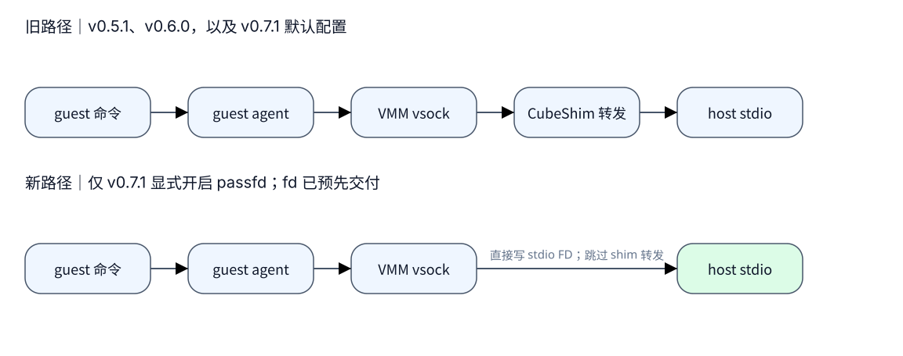
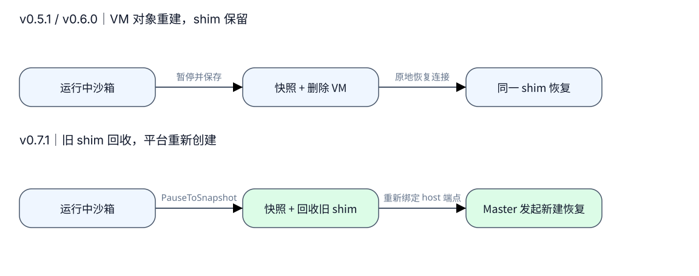

CubeShim 通信与 I/O 演进：控制通道没变，数据与恢复路径变了
如果只看“新增 passfd”“移除 driver_awake”这样的提交标题，很难判断升级会 改变什么。沿着“启动沙箱、读取命令输出、恢复快照”这条使用路径看，变化就 清晰得多：三个版本一直用进程内队列控制 VMM，后续改动主要落在 I/O 与恢复。
本文比较 v0.5.1、v0.6.0、v0.7.1 的固定源码。需要先认识 CubeShim、VMM 和 guest agent 的读者，可以先看当前机制图解。 这里的时间采用 commit 所在月份；源码已复核，运行效果未验证。
| 版本 | 固定源码 | 大致时间（commit） |
|---|---|---|
| v0.5.1 | a164417f4972 | 2026-07 |
| v0.6.0 | 8721dd151971 | 2026-07 |
| v0.7.1 | 31d911e430fd | 2026-09 |
1. 先看一直没变的控制方式
从 v0.5.1 开始，CubeShim 就直接调用内嵌 VMM 库。它把请求放进队列，
通过 eventfd 唤醒 VMM 线程，再等结果返回。v0.6.0、v0.7.1 保留了这套机制。
chapi 仍是 HTTP 控制旁路，cube.sock 仍用来连接 guest agent。E1
这意味着 passfd 的加入没有把 VMM 拆成独立进程，也没有改变普通启动请求的 传递方式。升级时更值得追踪的是：命令输出由谁搬运，暂停后由谁重新建立连接。
2. 输出路径：v0.7.1 增加了一条可选捷径
旧机制中，guest agent 收集命令输出，CubeShim 通过 ttrpc 读取，再写向宿主机 stdio 端点。新机制允许 CubeShim 先把端点的文件描述符交给 VMM，让 VMM 直接写它。改变的是宿主机侧的转发环节，guest 侧的 agent 与 vsock 仍然存在。
先比较图中 VMM 后面的箭头：上行要经过 CubeShim 转发，下行直接到 stdio 端点。图只画 stdout 数据方向，fd 的建立与交付发生在开始传输之前。E2

图 1：passfd 是新增的可选路径。没有开启时，v0.7.1 仍走图中上行。 收益只能表述为减少一个转发环节；没有实测数据，不能写成吞吐提高或零拷贝。 证据：E2。
启用需要 shim、VMM 和 guest agent 都支持该协议，还要开启 cube.use_passfd_io，
提供非空 stdout/stderr 路径，并避开模板构建场景。本版本默认关闭，Cubelet 源码中也未
找到开关的写入方。若只升级一个组件，或者只是看到了相关代码，不能推断这条
路径已经生效。
3. 恢复路径：从保留 shim 到重新创建
再看暂停。v0.5.1 和 v0.6.0 已经会把 VM 保存为快照并删除 VM 对象，但 shim 继续存活，后续在同一个 shim 中恢复。v0.7.1 把产品流程调整为：写完快照后 回收旧 shim，再由 Master 通过 create-from-snapshot 创建新的运行实例。E3
下面两行都以“运行中沙箱”为起点、“从快照恢复”为终点。区别在中间： 旧流程保留 shim；新流程把恢复工作交回平台的创建链。

图 2：恢复的不只是 guest 内存状态，还包括当前宿主机上的连接。新实例要重新 绑定 TAP、vsock 与 stdio；启用 passfd 时，输出连接也需要重绑。 证据：E3。图中是平台暂停/恢复，原地 rollback 仍是另一条保留 VMM 的路径。
对调用方最直接的兼容影响是：v0.7.1 的旧 pause_vm/resume_vm 入口会返回错误，
必须接入 PauseToSnapshot 和从快照创建的流程。这个变化不等于“任何旧版本快照
都能在新版恢复”；跨版本快照兼容尚未验证。
4. 网络路径没换，失败处理变了
网络包仍然在 guest virtqueue 与宿主机 TAP 之间传输。不过，v0.7.1 改变了三处 异常或边界条件下的行为，这会影响排查方式。E4
| 变更点 | v0.5.1 / v0.6.0 | v0.7.1 |
|---|---|---|
| TAP 写入返回 EIO | 向上传播设备错误 | 丢掉该帧并累计丢帧计数 |
| restore 初期中断通知 | guest driver 尚未发队列事件时强制通知 | 移除该补偿，仅按队列通知条件触发 |
| slow path 打开有名称的 TAP | 本调用路径不传入 IP/mask | 对新接口传入配置，既有接口保留 IP/mask |
第一项让“VM 仍活着”更不能代表网络正常：持续 EIO 可能表现为丢帧计数增长。 第二项移除了针对恢复初期的中断补偿，但源码本身不能证明它改善或破坏了首包 恢复。遇到差异时，应把它作为待验证候选，不能直接宣布根因。
5. 怎样理解这次演进的收益与边界
不变量是职责分工：CubeShim 发控制请求，VMM 执行并驱动设备，agent 在 guest 内执行命令。v0.7.1 为 stdio 提供可选直达端点的路径，并把平台恢复接回创建链。 从工程设计看，这减少了部分数据转发，并让恢复复用创建流程；代价是必须更认真地 处理协议配套、端点重绑与丢帧观测。这是设计判断，不是性能实测结论。
这些通信路径在 ARM64/x86_64 上共享；底层中断控制器与机器状态的差异仍需各自 验证。本文未确认生产启用状态、跨版本快照兼容和首包稳定性。 与主线无直接关系的 ivshmem 接入、页大小计算等变化另留专题研究，不在此展开。
一个实用反例是：cube.sock 握手失败时，即使 TAP 网卡已成功取得，也不能
说明 agent 通道正常。故障仍应先按“VMM 控制、guest 连接、设备数据”定位，
再检查版本引入的具体变化。
源码证据与扩展阅读
下面的证据表保留新旧两端，版本标签与完整 commit 由链接固定。 各变化分类为：主控制 unchanged、passfd added、平台恢复 changed、 driver_awake removed、部署与运行效果 uncertain。
- E1 · 控制方式保持不变（local fact）：v0.5.1 service、v0.6.0 service、v0.7.1 service；三版代码一致。
- E2 · stdio 变化（local fact）：旧版容器转发、v0.6.0 同路径；新版开关与 create/重连、fd 交付、VMM 直接读写 fd。传统路径仍然保留，passfd 在 A/中间版本不存在。
- E3 · 暂停恢复（local fact）：v0.5.1 pause/resume、v0.6.0 pause/resume；v0.7.1 PauseToSnapshot 与旧入口移除；Cubelet 回收旧实例、删除 shim task、Master 构造恢复创建请求；新版 stdio 重绑。
- E4 · 网络边界变化（local fact）：旧 EIO → 新 EIO；旧 driver_awake → 新队列通知；旧 named TAP 参数 → 新参数，以及 新 slow path。A 与中间版本在这些网络代码上相同。
继续查看当前机制图解或 网络数据面；后者的旧基线说明 不能直接套到 v0.7.1 已删除的 driver_awake 分支上。